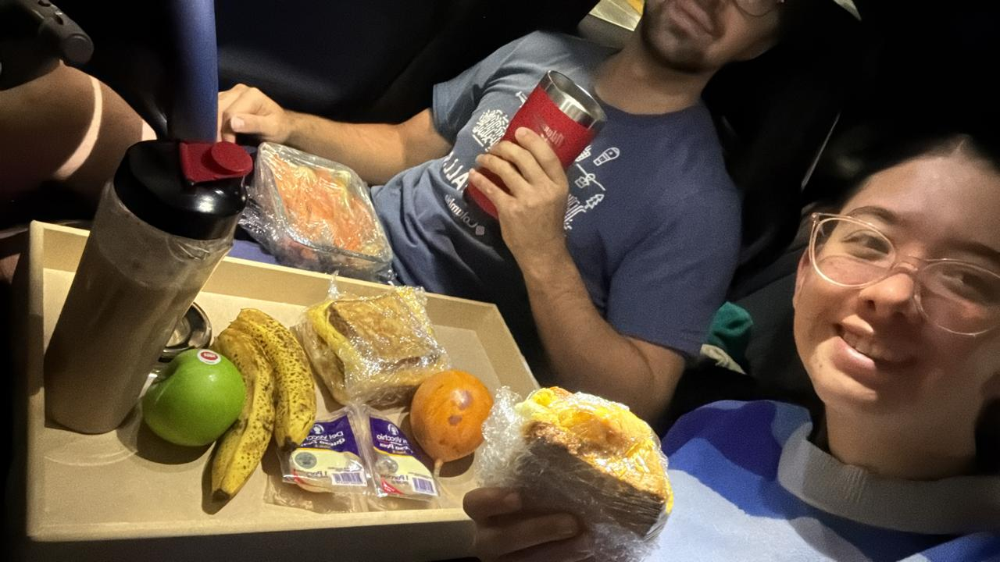
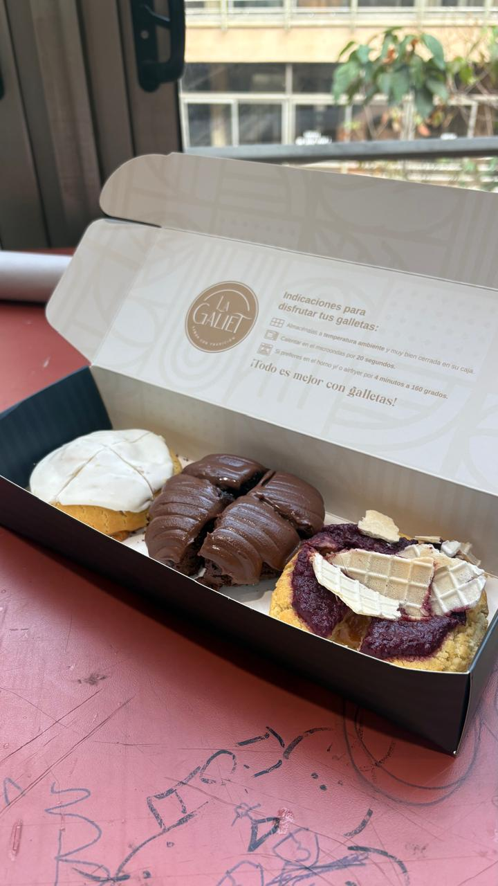

Lo que encontré adentro

Hay cosas que me sostienen sin que yo lo piense demasiado: hacer ejercicio, leer, tomar un día a la vez. No son rituales perfectos ni rutinas de manual — son los hábitos que aprendí a construir sola, a prueba y error, en cinco años viviendo en Bogotá. Son lo que me ancla cuando todo lo demás se siente incierto.
También están los pequeños placeres. Un café con leche bien hecho. Unas galletas de La Galiet en la tarde. Pintar algo sin que tenga que quedar bien. Son momentos que no parecen grandes, pero que saben a normalidad cuando el resto del día exige demasiado.

Porque hay algo que el TAC me ayudó a nombrar: le tengo miedo al futuro concreto. No a las metas largas — esas las tengo claras. Lo que me genera ansiedad es la logística de llegar hasta ahí: los pasos específicos, la línea de tiempo real, las decisiones pequeñas que construyen las grandes. Ese miedo no desapareció. Pero ahora sé que está ahí, y nombrarlo ya cambia algo.
La tensión entre planear y fluir es la que más me define. Soy una persona que procrastina — eso también lo sé —, y sé que procrastinar no es flojera: es una forma de esquivar exactamente lo que más me importa. Aprendí a no esquivarlo todo; aprendí, más bien, a tomar un día a la vez sin soltar de vista adónde voy.